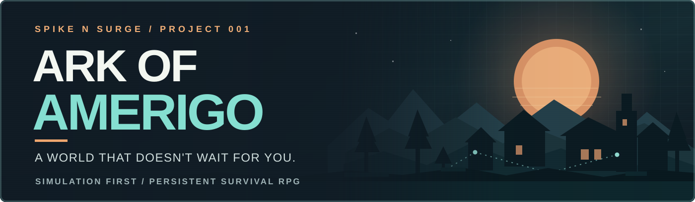

SIMULATION QA
Ark of Amerigo ↗
I lead design planning, quality strategy, Jira work management and acceptance decisions for a simulation-first survival RPG. AI assists development while I remain responsible for human decisions and quality expectations.
7,020 / 7,020Unity tests passed
↗